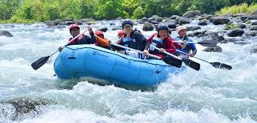
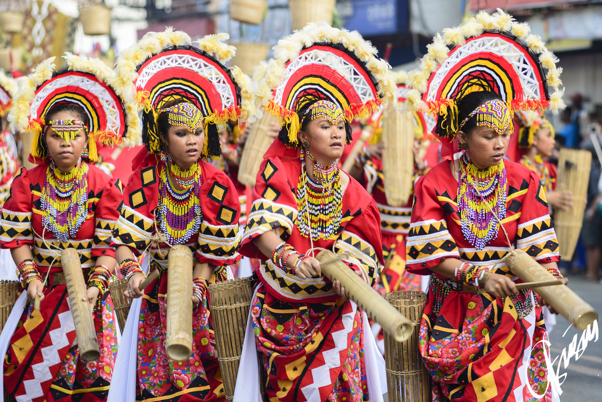

Activities & Experiences
Adventure
- Whitewater rafting along Cagayan de Oro River
- Ziplining at Dahilayan Adventure Park, Bukidnon
- Mountain trekking in Mt. Kitanglad Range
- Swimming and cliff diving at Tinago Falls

Culture & Heritage
- Join the colorful Kaamulan Festival in Bukidnon
- Learn traditional weaving and woodcraft from local artisans
- Visit museums and heritage sites in Iligan and Cagayan de Oro
- Watch local cultural dances and performances

Food & Culinary Experiences
- Taste Camiguin's famous Pastel buns
- Sip freshly brewed Bukidnon mountain coffee
- Try street food in Cagayan de Oro night markets
- Visit local farms to pick and taste tropical fruits